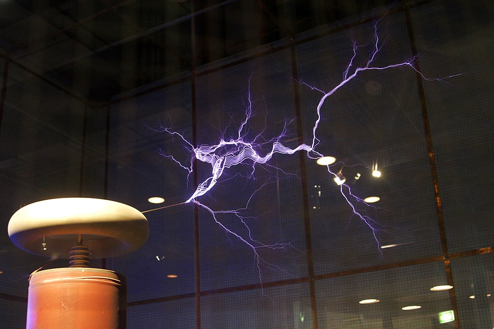

Probabil cea mai spectaculoasa inventie a lui Nikola Tesla este bobina Tesla, inventata in 1891. Bobina Tesla este un transformator special, care alimentat de la retea sau baterii ridica tensiunea pana la sute de mii de volti obtinandu-se curent de inalta frecventa. Este un transformator bobinat in aer (fara miez), in care primarul si secundarul sunt acordate sa functioneze la o frecventa de rezonanta.
Bobina Tesla produce tensiuni foarte mari ajungand pana la 2 milioane de volti. Bobina Tesla implica o sursa puternica de curent, unul sau mai multe condensatoare de mare voltaj si un eclator care controla descarcarea condensatorului in primarul bobinei Tesla.
Spre deosebire de un transformator obisnuit ce cupleaza intre primar si secundar peste 97% din campul magnetic, bobinele Tesla impart doar 10-20% din campul lor magnetic. In timp ce energia se transfera din primar in secundar, voltajul secundarului creste pana ce toata energia din primar este transferata. O bobina Tesla bine proiectata poate trasfera peste 85% din energia initiala stocata in condensatorul primar.
Astfel de bobine se pot gasi in monitoarele CRT, in televizoarele mai vechi sau la motoarele cu combustie interna. Fiecare monitor CRT (televizor, monitor de calcualtor etc) foloseste o mica bobina Tesla pentru a oferi un voltaj mare necesar accelerarii electronilor din tunul de electroni, ce „bombardeaza” ecranul. Bobinele Tesla sunt folosite si pentru a realiza efecte speciale in filme sau in industria de entertainment. In filmul Terminator 2, arcurile electrice ce „dansau” intre camioane au fost realizate folosind fulgere adevarate, create de o bobina Tesla. Bobina Tesla a fost folosita si in Star Trek sau in filmul The Entity, unde o actrita radia arcuri electrice.
